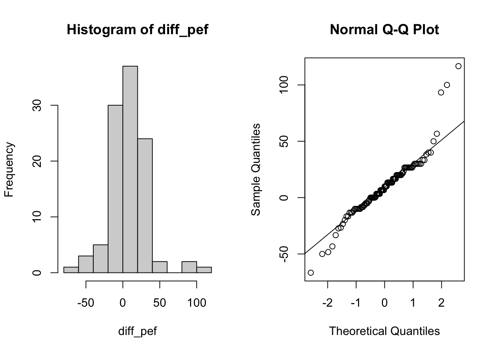
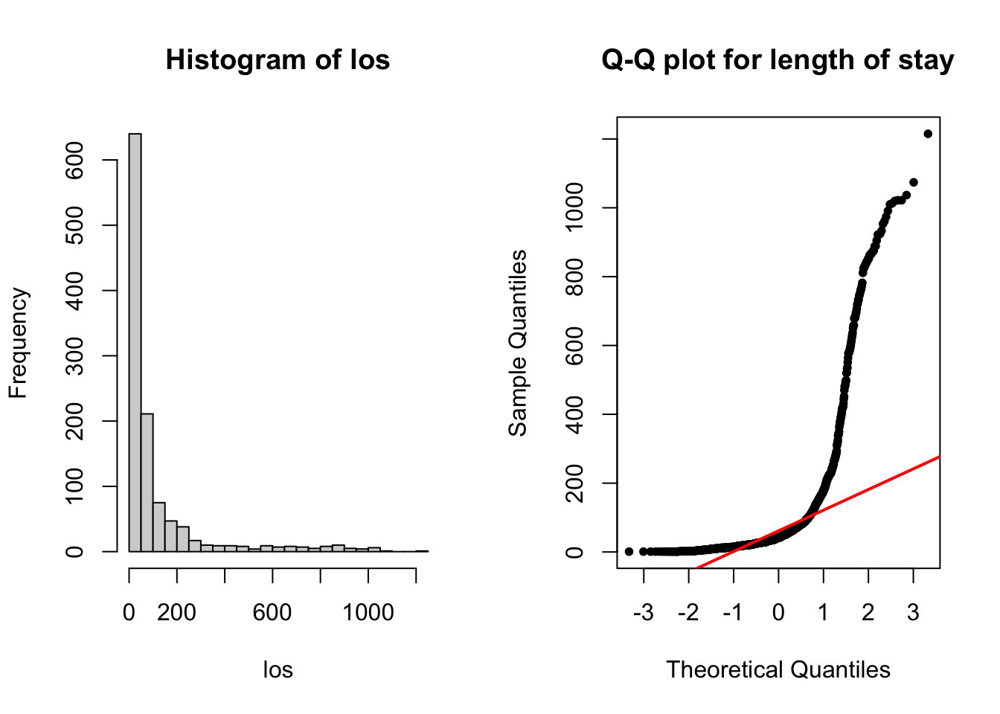
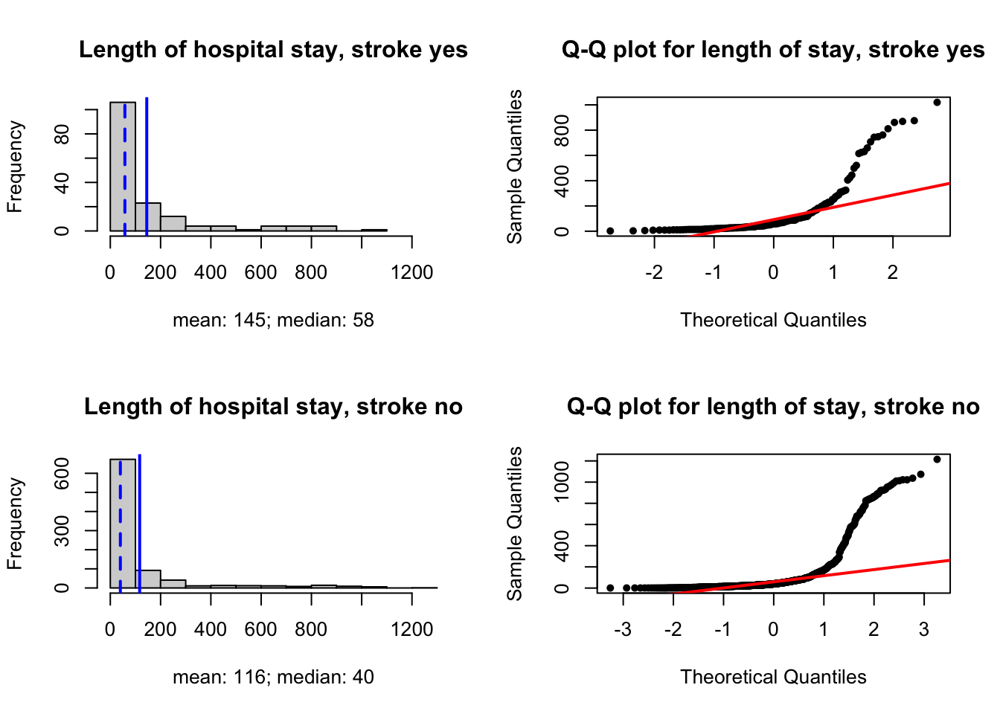
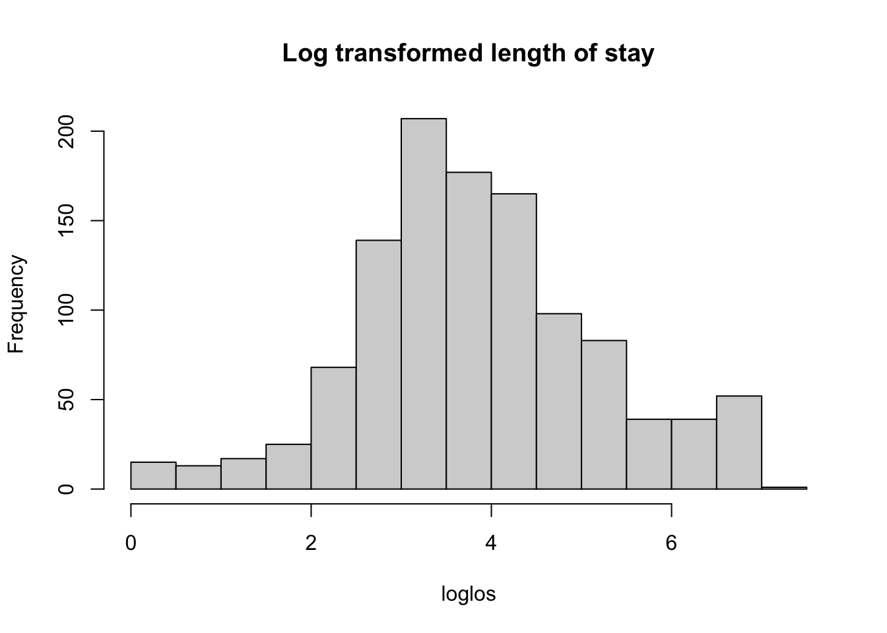
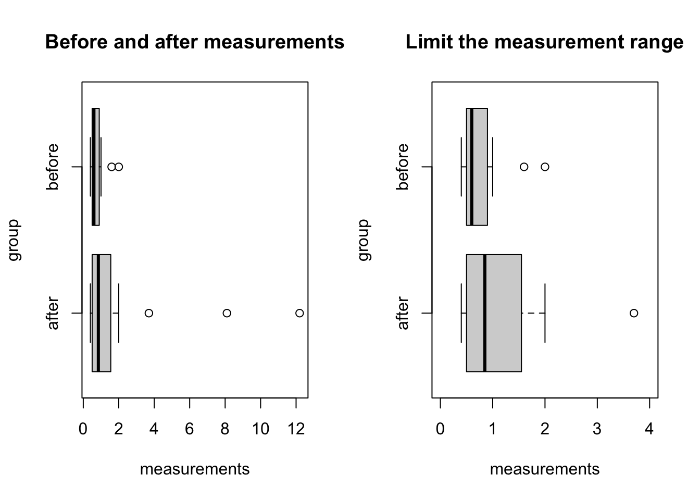
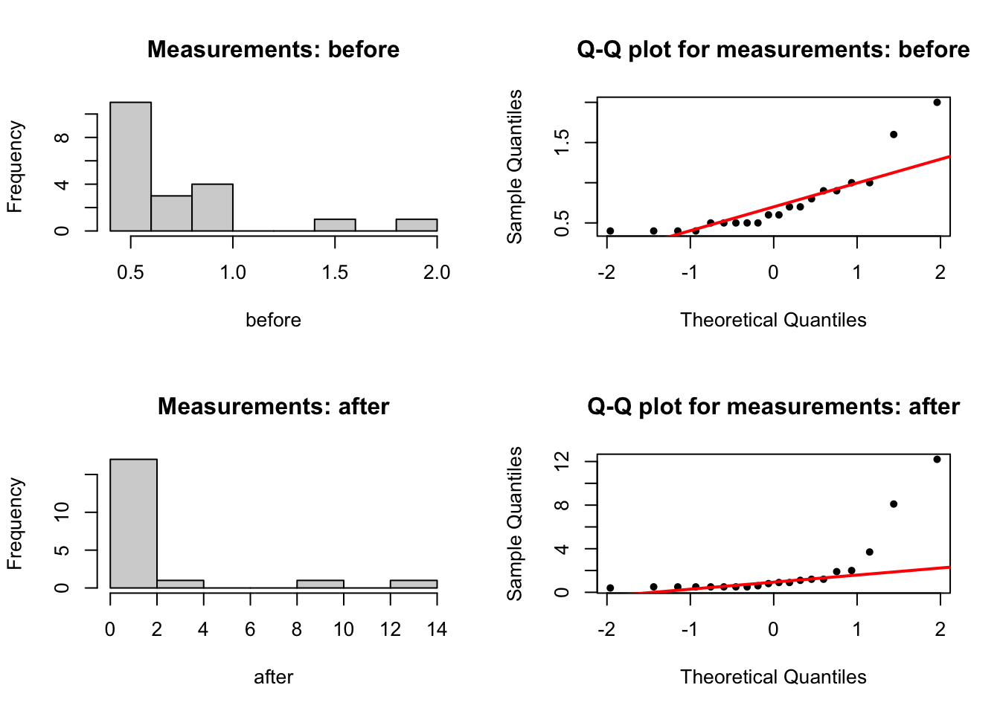
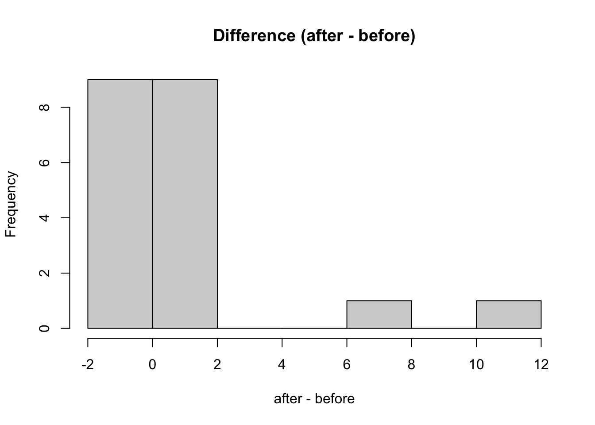
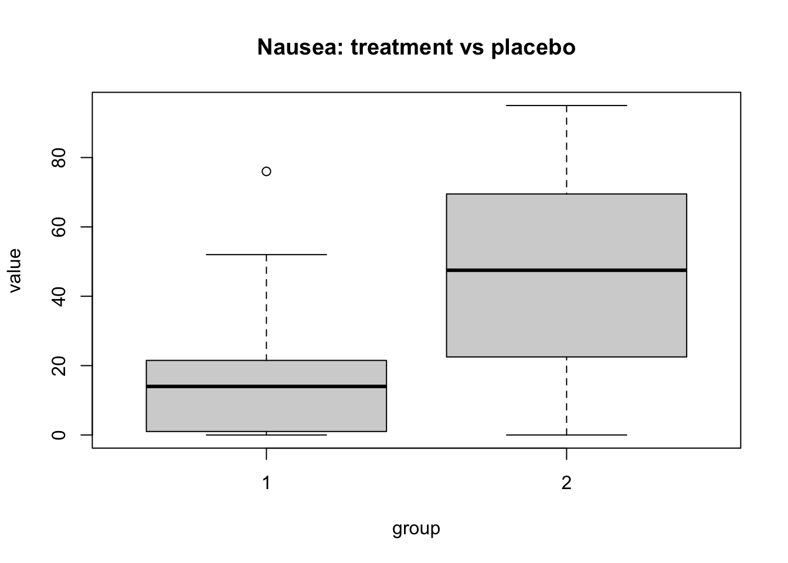

# median ci (with descTools package)
DescTools::MedianCI(x, conf.level = 0.95)
# one sample (paired samples) wilcoxon test (signed rank)
wilcox.test(x1, x2, paired = T)
# two sample (independent) wilcoxon test (rank sum)
wilcox.test(x, y, paired = F)Non-parametric tests
Wilcoxon signed rank, rank sum test
Datasets
- Exercise 1:
PEFH98-english(rda link, csv link) - Exercise 2:
liggetid(rda link, csv link) - Exercise 3:
antibody(rda link, csv link) - Exercise 4:
nausea(rda link, csv link)
Short summary
When you have data that are not normally distributed, such as time data (e.g. length of hospital stay, survival data), you should be careful when using statisical tests based on normal assumption.
Alternatively, transform your data (log transform for right-skewed data) before carrying out statistical tests; or use non-parametric (rank based) methods.
- One sample / paired sample: Wilcoxon signed rank test
- Two samples (independent samples): Wilcoxon rank sum test
Examples (exercises with solution)
Exercise 1 (lung function)
Lung function has been measured on 106 medical students. Peak expiratory flow rate (PEF, measured in liters per minute) was measured three times in a sittinng position, and three times in a standing position.
The variables are
- Age (years)
- Gender (female, 2 male)
- Height (cm)
- Weight (kg)
- PEF measured three times in a sitting position (pefsit1, pefsit2, pefsit3)
- PEF measured three times in a standing position (pefsta1, pefsta2, pefsta3)
- Mean of the three measurements made in a sitting position (pefsitm)
- Mean of the three measurements made in a standing position (pefstam)
- Mean of all six PEF values (pefmean)
1a)
We shall consider the difference betweenn PEF measured in a sitting position and in a standing position, i.e. we look at diff_pef = pefstam - pefsitm. First compute this variable.
lung_data <- read.csv('data/PEFH98-english.csv')
head(lung_data, 3) age gender height weight pefsit1 pefsit2 pefsit3 pefsta1 pefsta2 pefsta3
1 20 female 165 50 400 400 410 410 410 400
2 20 male 185 75 480 460 510 520 500 480
3 21 male 178 70 490 540 560 470 500 470
pefsitm pefstam pefmean
1 403.3333 406.6667 405.0000
2 483.3333 500.0000 491.6667
3 530.0000 480.0000 505.0000# compute diff_pef
diff_pef <- lung_data$pefstam - lung_data$pefsitm1b)
Make a histogram and Q-Q plot for the differences.
par(mfrow = c(1, 2))
hist(diff_pef)
# qqplot
qqnorm(diff_pef)
qqline(diff_pef)
1c)
Do a non-parametric test to decide whether pefsitm and pefstam are significantly different.
# one sample (signed rank test)
wilcox.test(diff_pef)
Wilcoxon signed rank test with continuity correction
data: diff_pef
V = 3547.5, p-value = 7.032e-05
alternative hypothesis: true location is not equal to 0# alternatively
pefstam <- lung_data$pefstam
pefsitm <- lung_data$pefsitm
wilcox.test(pefstam, pefsitm, paired = T) # paired
Wilcoxon signed rank test with continuity correction
data: pefstam and pefsitm
V = 3547.5, p-value = 7.032e-05
alternative hypothesis: true location shift is not equal to 0# the data is not severly skewed, can also use t-test
t.test(pefstam, pefsitm, paired = T)
Paired t-test
data: pefstam and pefsitm
t = 3.6974, df = 104, p-value = 0.0003498
alternative hypothesis: true mean difference is not equal to 0
95 percent confidence interval:
4.423204 14.656161
sample estimates:
mean difference
9.539683 Exercise 2 (length of hospital stay)
The data was collected at the Geriatric Department at Ullevål Sykehus. Below is a description of the data set liggetid. The file includes the following variables:
- Year of birth (faar)
- Month of birth (fmaan)
- Day of birth (fdag)
- Year of hospital admission (innaar)
- Month of admission (innmaan)
- Day of admission (inndag)
- Year of discharge from hospital (utaar)
- Month of discharge (utmaan)
- Day of discharge (utdag)
- Gender, where 1 = male and 0 = female (kjoenn)
- Admission from, where 1 = home, 2 = Div. of Medicine, 3 = Div. of Surgery, 4 = Other division, 5 = Other hospital, 6 = Nursing home (kom_fra)
- Stroke, where 1 = yes, 0 = no (slag)
- Age (alder)
- Hospital stay, in days (liggetid)
- Logarithm of hospital stay (lnliggti)
- Comes from Div. of Medicine (kom_fra2)
- Comes from Div. of Surgery (kom_fra3)
- Comes from Other division (kom_fra4)
- Comes from Other hospital (kom_fra5)
- Comes from Nursing home (kom_fra6)
- Censoring variable (censor)
The variable liggetid time is calculated from the innaar, innmaan, inndag, utaar, utmaan and utdag variables.
2a)
We want to compare the length of hospital stay for patients with and without stroke. First get a better understanding of the data. Start with computing some summary (descriptive) statistics for these two variables:
- mean, median, min, max, 75-th percentile for length of hospital stay (
liggetid); - count of how many patient have stroke, and do not have stroke (
slag == 1or0)
Visualize the variable liggetid using histogram and Q-Q plot, is the requirement for t-test met?
liggetid <- read.csv('data/liggetid.csv')
head(liggetid, 3) faar fmaan fdag innaar innmaan inndag utaar utmaan utdag kjoenn kom_fra slag
1 1906 3 4 1987 3 5 87 3 18 kvinne 1 0
2 1891 4 3 1987 3 6 87 3 23 kvinne 1 0
3 1908 9 6 1987 3 10 87 3 16 kvinne 1 0
alder liggetid lnliggti kom_fra2 kom_fra3 kom_fra4 kom_fra5 kom_fra6 status
1 81 13 2.564949 0 0 0 0 0 1
2 96 17 2.833213 0 0 0 0 0 1
3 79 6 1.791759 0 0 0 0 0 1# liggetid (length of stay: los)
los <- liggetid$liggetid
stroke <- liggetid$slag
summary(los) Min. 1st Qu. Median Mean 3rd Qu. Max.
1.0 21.0 42.0 117.1 102.0 1215.0 table(stroke)stroke
0 1
891 163 summary(stroke) # this shows 85 missing Min. 1st Qu. Median Mean 3rd Qu. Max. NA's
0.0000 0.0000 0.0000 0.1547 0.0000 1.0000 85 sum(is.na(stroke)) # 85[1] 85par(mfrow = c(1, 2))
# visualize length of hospital stay (los)
hist(los, breaks = 25)
# check normality
qqnorm(los, pch = 20, main = 'Q-Q plot for length of stay')
qqline(los, col = 'red', lwd = 2)
2b)
Since we want to compare the length of hospital stay for two groups, we need to separate the length of stay data into two groups, based on whether patients have stroke or not. Create two variables, ligt_s1 and ligt_s0.
Do an appropriate non-parametric test. What is the difference between this test and the one you did in Exercise 1?
Separate one variable via index and
which()
Previously, we showed how to separate one variable based on another,
- Exercise 2c) in EDA I
- Exercise 2a) in Categorical data analysis
You can try to use this method here as well; but you might notice that there are some NA in the results. This is because when you do stroke == 0 on NA, instead of giving you T or F, it gives NA; so the result of filtering liggetid keeps both T and NA.
These NAs can be removed post-hoc; but a clearer solution is to set 2 conditions inside the square bracket, and combine with &.
!is.na(stroke)means stroke variable not NAstroke == 1means stroke variable equals to 1which()identifies the indices for stroke where the conditions were met, e.g. the 4th, 22th elements.
# separate los
ligt_s1 <- los[which(!is.na(stroke) & stroke == 1)]
ligt_s0 <- los[which(!is.na(stroke) & stroke == 0)]
# mean, median
c(mean(ligt_s1), median(ligt_s1))[1] 145.0123 58.0000c(mean(ligt_s0), median(ligt_s0))[1] 116.7722 40.0000# visualize
par(mfrow = c(2,2))
# s1
hist(ligt_s1, main = 'Length of hospital stay, stroke yes',
xlab = 'mean: 145; median: 58',
xlim = c(0, 1300))
abline(v = mean(ligt_s1), col = 'blue', lwd = 2)
abline(v = median(ligt_s1), col = 'blue', lwd = 2, lty = 'dashed')
# qqplot
qqnorm(ligt_s1, pch = 20, main = 'Q-Q plot for length of stay, stroke yes')
qqline(ligt_s1, col = 'red', lwd = 2)
# s0
hist(ligt_s0, main = 'Length of hospital stay, stroke no',
xlab = 'mean: 116; median: 40',
xlim = c(0, 1300))
abline(v = mean(ligt_s0), col = 'blue', lwd = 2)
abline(v = median(ligt_s0), col = 'blue', lwd = 2, lty = 'dashed')
# qqplot
qqnorm(ligt_s0, pch = 20, main = 'Q-Q plot for length of stay, stroke no')
qqline(ligt_s0, col = 'red', lwd = 2)
# non parametric test
# not matched; independent samples
# wilcoxon rank sum
wilcox.test(ligt_s1, ligt_s0)
Wilcoxon rank sum test with continuity correction
data: ligt_s1 and ligt_s0
W = 84060, p-value = 0.001361
alternative hypothesis: true location shift is not equal to 0
Compare with t-test
If you do a t-test (inappropriately) instead of Mann-Whitney U test, you’ll have different results!
# t-test on skewed data
t.test(ligt_s1, ligt_s0)
Welch Two Sample t-test
data: ligt_s1 and ligt_s0
t = 1.5847, df = 220.8, p-value = 0.1145
alternative hypothesis: true difference in means is not equal to 0
95 percent confidence interval:
-6.879646 63.359853
sample estimates:
mean of x mean of y
145.0123 116.7722 2c)
Do the same analysis with a t-test on the logarithm-transformed data. The transformed variable already exists in the data set as lnliggti.
# use log transformed
loglos <- liggetid$lnliggti
hist(loglos, main = 'Log transformed length of stay')
qqnorm(loglos, pch = 20, main = 'Q-Q plot for log(length of stay)')
qqline(loglos, col = 'red', lwd = 2)
# separate data
logligt_s1 <- loglos[which(!is.na(stroke) & stroke == 1)]
logligt_s0 <- loglos[which(!is.na(stroke) & stroke == 0)]
t.test(logligt_s1, logligt_s0, paired = F)
Welch Two Sample t-test
data: logligt_s1 and logligt_s0
t = 3.4218, df = 237.88, p-value = 0.0007321
alternative hypothesis: true difference in means is not equal to 0
95 percent confidence interval:
0.1587474 0.5895572
sample estimates:
mean of x mean of y
4.180085 3.805933 Exercise 3 (antibody)
(Baker et al., 1980) We have data on concentration of antibody of Type III Group B Streptococcus (GBS) in 20 volunteers before and after immunization. The dataset is antibody.
3a)
The comparison of the antibody levels was summarized in the report of this study as ‘\(t = 1.8; P > 0.05\)’. Comment on the result.
antibody <- read.csv('data/antibody.csv')
head(antibody) before after
1 0.4 0.4
2 0.4 0.5
3 0.4 0.5
4 0.4 0.9
5 0.5 0.5
6 0.5 0.5before <- antibody$before
after <- antibody$afterCompute some summary statistics for the two variables, and then reproduce the result by the t-test.
# some summary stat of the data
summary(before) Min. 1st Qu. Median Mean 3rd Qu. Max.
0.400 0.500 0.600 0.745 0.900 2.000 summary(after) Min. 1st Qu. Median Mean 3rd Qu. Max.
0.400 0.500 0.850 1.925 1.375 12.200 # reproduce the result from t-test
t.test(antibody$before, antibody$after, paired = T)
Paired t-test
data: antibody$before and antibody$after
t = -1.8498, df = 19, p-value = 0.07996
alternative hypothesis: true mean difference is not equal to 0
95 percent confidence interval:
-2.5151563 0.1551563
sample estimates:
mean difference
-1.18 (Optional)
We can visually get an understanding of whether this result makes sense.
# long format data (requires tidyr package)
antibody_longdata <- tidyr::pivot_longer(antibody,
cols = tidyr::everything(),
names_to = 'group',
values_to = 'measurements')
head(antibody_longdata)# A tibble: 6 × 2
group measurements
<chr> <dbl>
1 before 0.4
2 after 0.4
3 before 0.4
4 after 0.5
5 before 0.4
6 after 0.5par(mfrow = c(1, 2))
boxplot(measurements ~ group,
data = antibody_longdata,
horizontal = T,
main = 'Before and after measurements')
# limit the y axis (horizontal x axis)
boxplot(measurements ~ group,
data = antibody_longdata,
horizontal = T,
ylim = c(0, 4),
main = 'Limit the measurement range')
par(mfrow = c(2,2))
# histogram
hist(before, main = 'Measurements: before')
qqnorm(before, pch = 20, main = 'Q-Q plot for measurements: before')
qqline(before, col = 'red', lwd = 2)
hist(after, main = 'Measurements: after')
qqnorm(after, pch = 20, main = 'Q-Q plot for measurements: after')
qqline(after, col = 'red', lwd = 2)
# histogram for the difference s
hist(after - before, main = 'Difference (after - before)')
3b)
Analyse the data with an appropriate test. Justify your choice.
# matched data (paired)
# one-sample test (signed rank)
wilcox.test(before, after, paired = T)Warning in wilcox.test.default(before, after, paired = T): cannot compute exact
p-value with tiesWarning in wilcox.test.default(before, after, paired = T): cannot compute exact
p-value with zeroes
Wilcoxon signed rank test with continuity correction
data: before and after
V = 2, p-value = 0.00412
alternative hypothesis: true location shift is not equal to 0# the error means there are ties (no change)
Paired vs independent data
You can try to do a test treating the data as independent. The conclusion could be different! Be careful with what you are testing.
# what happens if you use independent two-samples test?
wilcox.test(before, after, paired = F) # p = 0.14Warning in wilcox.test.default(before, after, paired = F): cannot compute exact
p-value with ties
Wilcoxon rank sum test with continuity correction
data: before and after
W = 146.5, p-value = 0.1454
alternative hypothesis: true location shift is not equal to 0Exercise 4 (nausea)
(Williams et al., 1989) Patients receiving chemotherapy as outpatients were randomized to receive either an active antiemetic treatment or placebo. The following table shows measurements (in mm) on a 100mm linear analogue self-assessment scale for nausea. The dataset is nausea.
- group:
1is active (treatment), and2is placebo.
4a)
Choose an appropriate test for comparing the treatment and placebo groups. Justify your choice.
nausea <- read.csv('data/nausea.csv')
head(nausea) value group
1 0 1
2 0 1
3 0 1
4 0 1
5 0 1
6 2 1treatment <- nausea$value[nausea$group == 1]
placebo <- nausea$value[nausea$group == 2]
summary(treatment) Min. 1st Qu. Median Mean 3rd Qu. Max.
0.00 1.50 14.00 16.95 21.25 76.00 summary(placebo) Min. 1st Qu. Median Mean 3rd Qu. Max.
0.00 26.25 47.50 47.10 68.75 95.00 # these samples are not matched: two sample independent test
# boxplot
boxplot(value ~ group, data = nausea,
main = 'Nausea: treatment vs placebo')
wilcox.test(treatment, placebo, paired = F)Warning in wilcox.test.default(treatment, placebo, paired = F): cannot compute
exact p-value with ties
Wilcoxon rank sum test with continuity correction
data: treatment and placebo
W = 78.5, p-value = 0.001039
alternative hypothesis: true location shift is not equal to 0